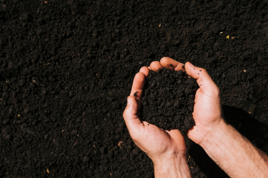
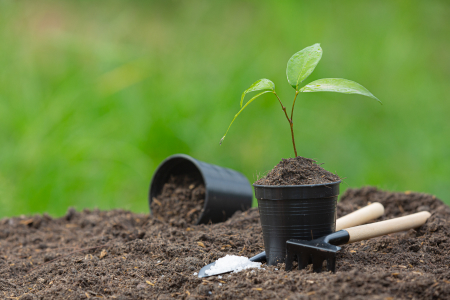

<section class="secret__section">
    <div class="container">
        <div class="secret__section-wrapper">
            <div class="secret__header">
                <h2 class="secret__title">
                    Секреты плодородия <br> “Домашние деревья”:
                </h2>
                <h3 class="sicret__subtitle">
                    Подготовленная и насыщенная удобрениями, <br> минералами и микроэлементами почва
                </h3>
            </div>
            <div class="secret__block">
                <div class="secret__item secret__item-1">
                    
                    <div class="secret__item-wrapper">
                        <h4 class="secret__item-title">
                            1. Почва
                        </h4>
                        <p class="secret__text">
                            Для защиты и ускорения роста, почва обогащается на молекулярном уровне путем прямого впрыскивания.
                        </p>
                    </div>
                </div>
                <div class="secret__item secret__item-2">
                    
                    <div class="secret__item-wrapper">
                        <h4 class="secret__item-title">
                            2. Семена
                        </h4>
                        <p class="secret__text">
                            Семена проходят специально-подготовительную обработку, что гарантирует всхожесть.
                        </p>
                    </div>
                </div>
                <div class="secret__item secret__item-3">
                    
                    <div class="secret__item-wrapper">
                        <h4 class="secret__item-title">
                            3. Саженцы
                        </h4>
                        <p class="secret__text">
                            Благодаря нано-почве, фруктовые деревья растут крепкими и приносят сладкие плоды до 4-х раз в год.
                        </p>
                    </div>
                </div>
            </div>
        </div>
    </div>
</section>